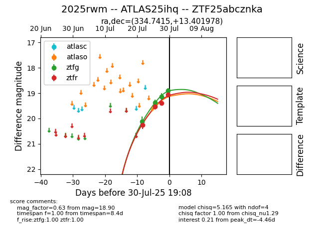

Target 2025rwm at 2025-07-30 19:08, see:
FINK: fink-portal.org/2025rwm
Lasair: lasair-ztf.lsst.ac.uk/objects/2025rwm
ALeRCE: alerce.online/object/2025rwm
TNS: wis-tns.org/object/2025rwm
YSE: ziggy.ucolick.org/yse/transient_detail/2025rwm
alt names
ZTF25abcznka (ztf,fink)
2025rwm (tns,yse)
ATLAS25ihq (atlas)
coordinates:
equatorial (ra, dec) = (334.7415,+13.40198)
galactic (l, b) = (75.6913,-35.13003)
photometry
last atlaso=19.41, ztfg=18.90, ztfr=19.07
1 atlaso, 4 ztfg, 4 ztfr detections
